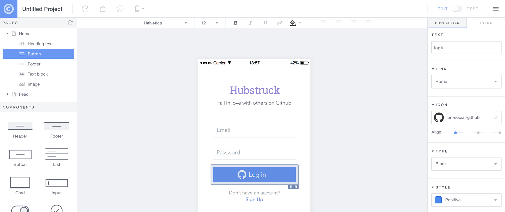
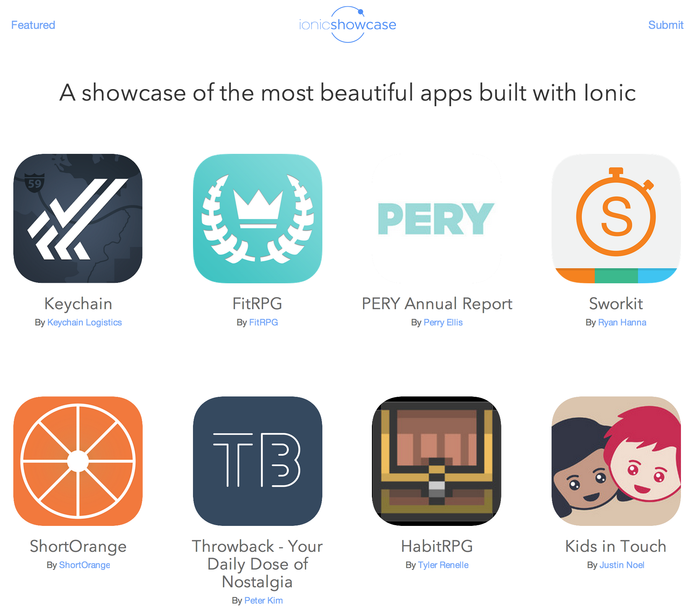

Building Hybrid Apps with AngularJS and Ionic

- Ionitron
- Ionic Framework Developer
- Drifty Co, Madison, Wisconsin
- @ionitron
- github.com/ionitron
Overview
- Native vs Hybrid Apps
- Intro Ionic
- UI Components
- Ionic CLI
- Demos
“I want a native app!”
The Downsides of Native
- Proficiency in each platform required
- Entirely separate code bases
- Timely & expensive development
- Diminishing returns
More Platforms. More Problems.


Why are we still coding for multiple platforms?
“Is there an alternative?”

- Hybrid Apps: HTML5 that acts like native
- Phonegap renamed to Cordova
- Web wrapped in native layer
- Direct access to native APIs
- Familiar web dev environment
- Develop a single code base (web platform)
“Oh No! The Zuck has spoken!”

http://techcrunch.com/2012/09/11/mark-zuckerberg-our-biggest-mistake-with-mobile-was-betting-too-much-on-html5/
Are You Building the Facebook app?
- Have a multi-million dollar budget?
- Have a large team of experienced native developers?
- Does your billion-dollar revenue depend on this app?
- If so...do native
- ...but today it's not so black and white
“Hybrid apps are slow!”
“The Times They Are a-Changin'”
Mobile devices have rapidly improved!
| Year | Device | Processor | RAM |
|---|---|---|---|
| 2007 | iPhone | 620 MHz | 128 MB |
| 2010 | iPhone 4 | 1 GHz | 512 MB |
| 2015 | iPhone 6 | 1.4 GHz dual-core | 1 GB |
Web-standards have rapidly improved!
- caniuse.com is lookin' pretty good nowadays
- Android is now Chromium-based
- iOS users keep their devices up-to-date

https://mixpanel.com/trends/#report/ios_8/from_date:-141,report_unit:day,to_date:0
https://mixpanel.com/trends/#report/android_os_adoption
Native SDKs Are Great
- Common UI
- Views
- Navigation and stack history
- Transitions
- Gestures
There's No Web SDK
- It's the wild-west for hybrid apps
- We need to bridge the gap between web and native
- We need rich, native-style UI components and interactions
- We need UI APIs, not just jQuery widgets
“Hello.”
Web Technologies You Already Know and Love


(You'll feel right at home)

http://www.google.com/trends/explore#q=angularjs%2C%20ember.js%2C%20knockoutjs%2C%20backbonejs&date=8%2F2011%2037m&cmpt=q
Standing on the Shoulders of AngularJS
- Proven for large-scale webapp development
- Extends the HTML vocabulary
- UI Components using Directives and Services
Native Focused
- Modeled off of native SDKs
- Built to work with Cordova
Performance Obsessed
- Hardware accelerated animations
- Minimal DOM Manipulation
- Remove 300ms tap delay
Plain ol' CSS
- Cohesive visual system
- Clean and simple
- Easy to customize
- Stand-alone CSS (independent of Ionic's JavaScript)
- ionicframework.com/docs/components

- CSS generated from the Sass preprocessor
- Quickly give your app its own look and feel
- CSS designed to be easily overridden
- Variables based with default settings
- 80+ reusable and useful mixins
Ionicons

Over 700 MIT licensed font-icons included
“How does it all come together?”
Ionic's Adoption
- 13,000+ Github Stars
- Top 50 most starred Github repos
- Consistently Top 10 trending JS Github repos
- Ionic CLI averages 2,300 downloads/day
- 400,000+ Ionic apps have been started from our CLI
- Released Alpha: November 2013
- Released Beta: March 2014
- Release Candidate: Winter 2015
UI Component Overview

Lists
Complex Lists
- AngularJS Directive
- Buttons exposed by swiping
- Reorder
- Delete
List Item {{ item.id }}
Collection Repeat
- Similar to Angular's
ng-repeat - Inspired by iOS’s UICollectionView
- Scroll through thousands of items
- Only renders the viewable items
- Smooth jank-free scrolling
{{ c.name }}
{{ c.email }}
Navigation
- Uses AngularUI Router
- Shows back button when possible
- Transitions follow direction of nav
- Works with Android's back button
Back
Tabs
- Nested views
- Each tab has its own nav history
- Abstract states in AngularUI Router
Side Menu
Left Menu
...
Slide Box
Slide 1
Slide 2
Slide 3
Action Sheet
- AngularJS Service
- Inject into controllers
$ionicActionSheet.show({
titleText: 'Action Sheet Example',
buttons: [
{ text: 'Share' },
{ text: 'Move' },
],
destructiveText: 'Delete',
cancelText: 'Cancel',
buttonClicked: function(index) {
console.log('BUTTON CLICKED', index);
return true;
}
});Popover
- AngularJS Service
- Inline or external template
$ionicPopover.fromTemplateUrl('popover.html',
function(popover) {
$scope.popover = popover;
}
);
My Popover Title
Hello!
Modal
- AngularJS Service
- Inline or external template
$ionicModal.fromTemplateUrl('modal.html', {
scope: $scope
}).then(function(modal) {
$scope.modal = modal;
});Pull to Refresh
Ionic Creator
Ionic View App
$ npm install -g ionic
_ _
(_) (_)
_ ___ _ __ _ ___
| |/ _ \| '_ \| |/ __|
| | (_) | | | | | (__
|_|\___/|_| |_|_|\___| CLI
- Quickly create a project with starter templates
- Boilerplate app structure ready for customization
- Preconfigured tools: Gulp, Sass, Bower, etc.
- Start a local dev server with LiveReload
- Update Ionic Framework library files
- Build and run native apps
Ionic CLI
$ npm install -g ionic cordova$ ionic start myapp sidemenu$ cd myapp$ ionic serve
Demo Time!
May the demo gods be with us
Ionic Angular Testing
- It's just an AngularJS app!
- Setup with a great separation of concerns
- Karma unit tests
- Protractor e2e tests
Ionic Showcase
MIT LICENSED
Free to use (even commercially)
COMMUNITY POWERED
Active developer forum, IRC and GitHub repo
Get Started with Ionic!
Getting started guide
ionicframework.com/getting-started
Documentation
ionicframework.com/docs
Visit the Community Forum
forum.ionicframework.com
Contribute on GitHub
github.com/driftyco/ionic